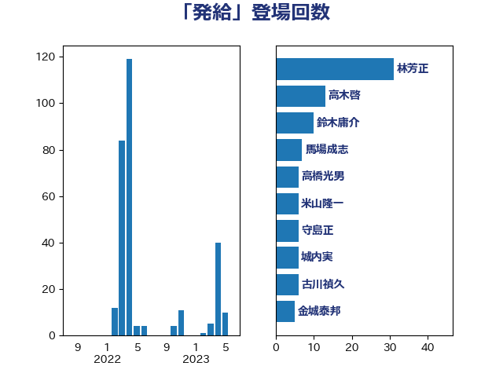

単語「発給」

| 林芳正 | 自由民主党 | 29 回 |
| 高木啓 | 自由民主党 | 11 回 |
| 渡辺周 | 立憲民主党 | 7 回 |
| 馬場成志 | 自由民主党 | 7 回 |
| 古川禎久 | 自由民主党 | 6 回 |
| 城内実 | 自由民主党 | 6 回 |
| 守島正 | 日本維新の会 | 6 回 |
| 米山隆一 | 立憲民主党 | 6 回 |
| 高橋光男 | 公明党 | 6 回 |
| 上川陽子 | 自由民主党 | 5 回 |
| 太栄志 | 立憲民主党 | 5 回 |
| 自見はなこ | 自由民主党 | 5 回 |
| 茂木敏充 | 自由民主党 | 5 回 |
| 金城泰邦 | 公明党 | 5 回 |
| 吉田宣弘 | 公明党 | 4 回 |
| 岸田文雄 | 自由民主党 | 4 回 |
| 鈴木貴子 | 自由民主党 | 4 回 |
| 徳永久志 | 立憲民主党 | 3 回 |
| 浮島智子 | 公明党 | 3 回 |
| 磯崎仁彦 | 自由民主党 | 3 回 |
| 細田博之 | 自由民主党 | 3 回 |
| 鈴木庸介 | 立憲民主党 | 3 回 |
| 伊藤孝恵 | 国民民主党 | 2 回 |
| 小田原潔 | 自由民主党 | 2 回 |
| 杉本和巳 | 日本維新の会 | 2 回 |
| 梶山弘志 | 自由民主党 | 2 回 |
| 片山大介 | 日本維新の会 | 2 回 |
| 田村憲久 | 自由民主党 | 2 回 |
| 野田佳彦 | 立憲民主党 | 2 回 |
| 青柳仁士 | 日本維新の会 | 2 回 |
| 國重徹 | 公明党 | 1 回 |
| 宮内秀樹 | 自由民主党 | 1 回 |
| 小宮山泰子 | 立憲民主党 | 1 回 |
| 小林鷹之 | 自由民主党 | 1 回 |
| 小野泰輔 | 日本維新の会 | 1 回 |
| 山東昭子 | 自由民主党 | 1 回 |
| 山谷えり子 | 自由民主党 | 1 回 |
| 岸真紀子 | 立憲民主党 | 1 回 |
| 川合孝典 | 国民民主党 | 1 回 |
| 後藤祐一 | 立憲民主党 | 1 回 |
| 打越さく良 | 立憲民主党 | 1 回 |
| 末松信介 | 自由民主党 | 1 回 |
| 本村伸子 | 日本共産党 | 1 回 |
| 本田太郎 | 自由民主党 | 1 回 |
| 松原仁 | 立憲民主党 | 1 回 |
| 玄葉光一郎 | 立憲民主党 | 1 回 |
| 神田潤一 | 自由民主党 | 1 回 |
| 辻清人 | 自由民主党 | 1 回 |
| 鈴木憲和 | 自由民主党 | 1 回 |
| 鈴木義弘 | 国民民主党 | 1 回 |
| 青山大人 | 立憲民主党 | 1 回 |
| 音喜多駿 | 日本維新の会 | 1 回 |